![Slide: Functional API. Creating models that offer more flexibility than the sequential API (a stack of layers with exactly 1 input and 1 output), including multi-input, multi-output, branching and shared layers. Create instances of layers and connect them in pairs; the input layer takes a shape argument; use layers as functions that take tensors and return tensors; define a Model specifying input and output. Code: seq_model = Sequential() with Dense(32, relu, input_shape=(64,)), Dense(32, relu), Dense(10, softmax); functional equivalent: input_tensor = Input(shape=(64,)), x = layers.Dense(32, activation='relu')(input_tensor), x = layers.Dense(32, activation='relu')(x), output_tensor = layers.Dense(10, activation='softmax')(x), model = Model(input_tensor, output_tensor)](../assets/slides/dl9-p01-functional-api.png)
Lecture9 (deep_learning_part3_3.pdf, 53 หน้า) · 2603520 Deep Learning
Lecture นี้มีสามส่วนที่ต่อกัน:
ส่วนที่ 3 ใช้ส่วนที่ 1 โดยตรง: object detector คือโมเดลที่มีสอง output (class และตำแหน่ง) จึงต้องเขียนด้วย Functional API.
Sequential API คือ stack ของ layer ที่มี 1 input และ 1 output เท่านั้น. Functional API ให้ more flexibility: รองรับ multi-input, multi-output, branching และ shared layers. มีสองขั้น:
shape (tuple ที่บอกมิติของ input). ใช้ layer เป็นฟังก์ชันที่รับ tensor และคืน tensor จึงเรียกว่า functional APIfrom keras.models import Sequential, Model
from keras import layers
from keras import Input
seq_model = Sequential()
seq_model.add(layers.Dense(32, activation='relu', input_shape=(64,)))
seq_model.add(layers.Dense(32, activation='relu'))
seq_model.add(layers.Dense(10, activation='softmax'))
input_tensor = Input(shape=(64,))
x = layers.Dense(32, activation='relu')(input_tensor)
x = layers.Dense(32, activation='relu')(x)
output_tensor = layers.Dense(10, activation='softmax')(x)
model = Model(input_tensor, output_tensor)
model.summary()| โค้ด | ทำอะไร |
|---|---|
| seq_model = Sequential() … seq_model.add(...) | แบบ Sequential ที่ใช้มาตั้งแต่ Lesson 5: เพิ่ม layer ทีละชั้นด้วย add |
| input_tensor = Input(shape=(64,)) | สร้าง tensor ตั้งต้น. shape=(64,) คือ vector 64 ค่าต่อตัวอย่าง (ไม่รวม batch) |
| x = layers.Dense(32, activation='relu')(input_tensor) | วงเล็บแรกสร้าง layer; วงเล็บที่สองเรียก layer บน tensor แล้วได้ tensor ใหม่ x |
| x = layers.Dense(32, activation='relu')(x) | ส่ง x เข้า layer ถัดไป แล้วเก็บผลทับชื่อเดิม |
| output_tensor = layers.Dense(10, activation='softmax')(x) | tensor สุดท้าย 10 ค่า |
| model = Model(input_tensor, output_tensor) | คลาส Model แปลงคู่ input tensor และ output tensor เป็นโมเดล. Keras ไล่ย้อนจาก output หา layer ทุกตัวที่อยู่ระหว่างทาง |
| model.summary() | ผลเหมือน Sequential: 2,080 + 1,056 + 330 = 3,466 parameter |
สองโมเดลนี้เท่ากันทุกประการ: \(64 \cdot 32 + 32 = 2{,}080\), \(32 \cdot 32 + 32 = 1{,}056\), \(32 \cdot 10 + 10 = 330\). ความต่างอยู่ที่ Functional API ทำให้ tensor มีชื่อ จึงส่ง tensor เดียวไปหลาย layer หรือรวมหลาย tensor เข้าด้วยกันได้.
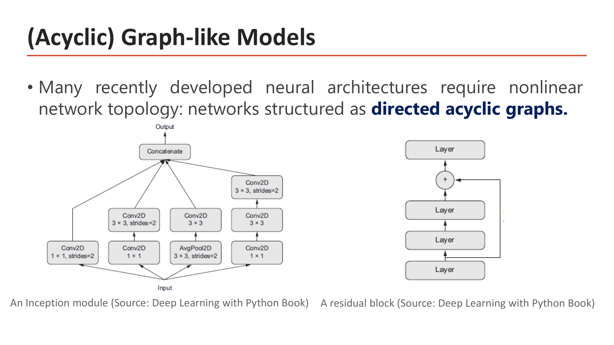
สถาปัตยกรรมรุ่นใหม่จำนวนมากมี topology ที่ไม่เป็นเส้นตรง คือเป็น directed acyclic graphs. (กราฟมีทิศทางที่ไม่มีวงวน). สองตัวอย่างในสไลด์มาจาก Lesson 8: Inception module แตก input เป็น 4 กิ่งแล้วรวมด้วย Concatenate; residual block ส่ง input ข้าม layer ไปบวกกับ output. ทั้งสองแบบเขียนด้วย Sequential ไม่ได้เพราะ tensor หนึ่งตัวถูกใช้มากกว่าหนึ่งครั้ง.
x = Layer(...)(tensor) และ model = Model(inputs, outputs)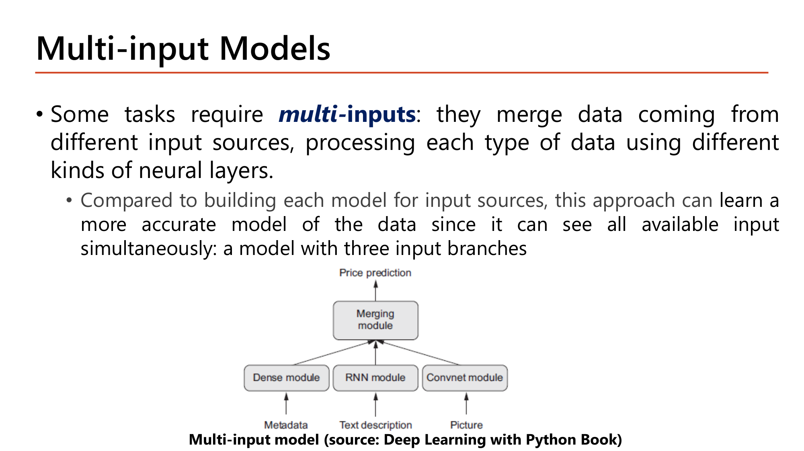
งานบางอย่างต้องการ multi-inputs: รวมข้อมูลจากแหล่งต่างกัน และประมวลผลข้อมูลแต่ละชนิดด้วย layer คนละแบบ. ตัวอย่างในสไลด์คือการทำนายราคาจากสามแหล่ง: metadata → Dense module, text description → RNN module, picture → Convnet module แล้วรวมที่ merging module. เทียบกับการสร้างโมเดลแยกต่อแหล่งข้อมูล วิธีนี้เรียนโมเดลที่แม่นกว่าได้เพราะเห็น input ทั้งหมดพร้อมกัน.
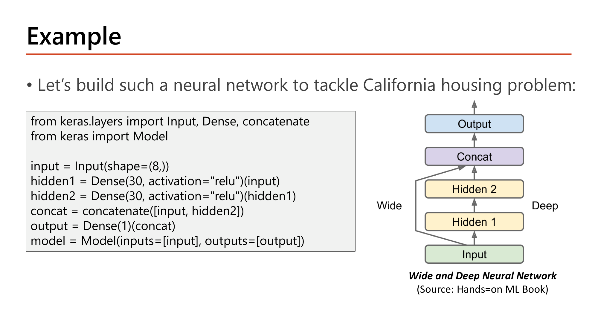
Wide & Deep network ส่ง input ไปสองทาง: ทาง deep ผ่าน hidden layer สองชั้น และทาง wide ข้ามตรงไปยัง concat. ทาง deep เรียน pattern ซับซ้อน; ทาง wide รักษา feature ดิบไว้ให้ output ใช้โดยตรง.
from keras.layers import Input, Dense, concatenate
from keras import Model
input = Input(shape=(8,))
hidden1 = Dense(30, activation="relu")(input)
hidden2 = Dense(30, activation="relu")(hidden1)
concat = concatenate([input, hidden2])
output = Dense(1)(concat)
model = Model(inputs=[input], outputs=[output])| โค้ด | ทำอะไร |
|---|---|
| input = Input(shape=(8,)) | California housing มี 8 feature |
| hidden1 = Dense(30, activation="relu")(input) | ทาง deep ชั้นที่ 1: 8·30 + 30 = 270 parameter |
| hidden2 = Dense(30, activation="relu")(hidden1) | ทาง deep ชั้นที่ 2: 30·30 + 30 = 930 parameter |
| concat = concatenate([input, hidden2]) | ต่อ tensor สองตัวตามแกนสุดท้าย: 8 + 30 = 38 ค่า. รับ list ของ tensor. ไม่มี parameter |
| output = Dense(1)(concat) | regression จึงไม่มี activation: 38·1 + 1 = 39 parameter |
| model = Model(inputs=[input], outputs=[output]) | รวม 270 + 930 + 39 = 1,239 parameter |
![Slide: Example. Send a subset of the features through the wide path and a different subset (possibly overlapping) through the deep path: 5 features through the skip path (features 0 to 4) and 6 features through the normal path. Code: input_A = Input(shape=[5]); input_B = Input(shape=[6]); hidden1 = Dense(30, activation="relu")(input_B); hidden2 = Dense(30, activation="relu")(hidden1); concat = concatenate([input_A, hidden2]); output = Dense(1)(concat); model = Model(inputs=[input_A, input_B], outputs=[output])](../assets/slides/dl9-p03-wide-deep-two-inputs.png)
ขยายเป็นสอง input: ส่ง feature ชุดหนึ่งผ่าน wide path และอีกชุด (ซ้อนกันได้) ผ่าน deep path. ตัวอย่างส่ง 5 feature (feature 0 ถึง 4) ทาง skip path และ 6 feature ทาง normal path.
input_A = Input(shape=[5])
input_B = Input(shape=[6])
hidden1 = Dense(30, activation="relu")(input_B)
hidden2 = Dense(30, activation="relu")(hidden1)
concat = concatenate([input_A, hidden2])
output = Dense(1)(concat)
model = Model(inputs=[input_A, input_B], outputs=[output])| โค้ด | ทำอะไร |
|---|---|
| input_A = Input(shape=[5]) | input ของ wide path: 5 feature |
| input_B = Input(shape=[6]) | input ของ deep path: 6 feature |
| hidden1 = Dense(30, activation="relu")(input_B) | เฉพาะ input_B เข้า hidden layer: 6·30 + 30 = 210 |
| concat = concatenate([input_A, hidden2]) | ต่อ input_A ดิบกับ hidden2: 5 + 30 = 35 ค่า |
| output = Dense(1)(concat) | 35 + 1 = 36 parameter |
| model = Model(inputs=[input_A, input_B], outputs=[output]) | inputs เป็น list สองตัว. ตอน fit ต้องส่งข้อมูลเป็น list ลำดับเดียวกัน: model.fit([X_train_A, X_train_B], y_train) |
Total params = \(210 + 930 + 36 = 1{,}176\). เทียบกับโมเดล input เดียว (1,239) ลดลง 63 ตัว เพราะ deep path รับ 6 feature แทน 8 และ concat ยาว 35 แทน 38.
input_A = Input(shape=[4]) และ input_B = Input(shape=[10]) โดย input_B ผ่าน Dense(20, relu) สองชั้นต่อกัน แล้ว concatenate กับ input_A ก่อนเข้า Dense(1) โมเดลนี้มี parameter ทั้งหมดกี่ตัว?concatenate([a, b]) รับ list; Model(inputs=[input_A, input_B], outputs=[output]); tensor ที่เข้า hidden1 คือ input_B ไม่ใช่ input_Aconcatenate ไม่มี parameter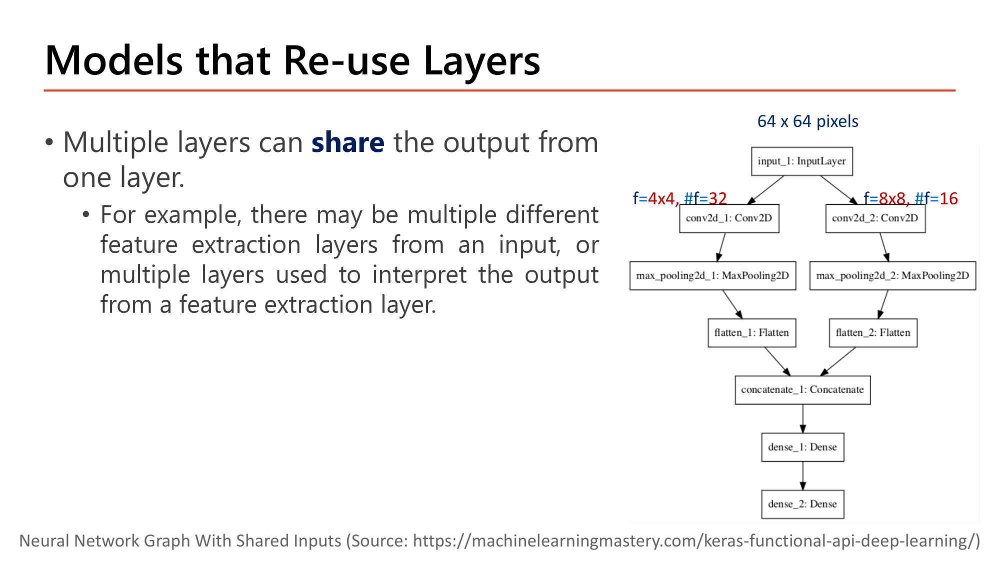
หลาย layer สามารถ share output จาก layer เดียวกัน. เช่น มี feature extraction layer หลายแบบจาก input เดียว หรือมีหลาย layer ตีความ output ของ feature extraction layer เดียว. กราฟในสไลด์: input ภาพ 64 x 64 pixels ส่งเข้าสอง convolution พร้อมกัน คือ f=4x4, #f=32 และ f=8x8, #f=16 (kernel เล็กจับรายละเอียด, kernel ใหญ่จับโครงสร้างกว้าง) แต่ละกิ่ง pooling และ flatten แล้ว concatenate เข้า dense สองชั้น.
![Slide: Example. Build a deep learning model as in the picture. Code with blanks: input = Input(shape=(64,64,1)); conv1 = Conv2D(____, kernel_size=4, activation='relu')(____); pool1 = MaxPooling2D(pool_size=(2, 2))(____); flat1 = Flatten()(pool1); conv2 = Conv2D(____, kernel_size=__, activation='relu')(____); pool2 = MaxPooling2D(pool_size=(2, 2))(____); flat2 = Flatten()(pool2); merge = concatenate([flat1, flat2]); hidden1 = ____(10, activation='relu')(____); output = Dense(1, ____='sigmoid')(hidden1); model = Model(inputs=____, outputs=____). Annotations f=4x4, #f=32 and f=8x8, #f=16](../assets/slides/dl9-p07-reuse-layers-exercise.png)
หน้า 7 เป็นโค้ดเว้นช่อง ซึ่งเป็นรูปแบบของข้อสอบเติมโค้ด. ป้ายกำกับในรูปคือ f=4x4, #f=32 สำหรับกิ่งแรก และ f=8x8, #f=16 สำหรับกิ่งที่สอง. โค้ดที่เติมครบ:
from keras.utils import plot_model
from keras import Model
from keras.layers import Input, Dense, Flatten, concatenate, Conv2D, MaxPooling2D
input = Input(shape=(64,64,1)) # input layer
# first feature extractor
conv1 = Conv2D(32, kernel_size=4, activation='relu')(input)
pool1 = MaxPooling2D(pool_size=(2, 2))(conv1)
flat1 = Flatten()(pool1)
# second feature extractor
conv2 = Conv2D(16, kernel_size=8, activation='relu')(input)
pool2 = MaxPooling2D(pool_size=(2, 2))(conv2)
flat2 = Flatten()(pool2)
# merge feature extractors
merge = concatenate([flat1, flat2])
hidden1 = Dense(10, activation='relu')(merge)
output = Dense(1, activation='sigmoid')(hidden1)
model = Model(inputs=input, outputs=output)| ช่องว่างในสไลด์ | คำตอบและเหตุผล |
|---|---|
| conv1 = Conv2D(______, kernel_size=4, ...)(______) | 32 และ input. #f = 32 คือจำนวน filter; f = 4×4 ถูกเติมไว้แล้วเป็น kernel_size=4 |
| pool1 = MaxPooling2D(pool_size=(2, 2))(____) | conv1. pooling รับ output ของ convolution ในกิ่งเดียวกัน |
| conv2 = Conv2D(______, kernel_size=__, ...)(______) | 16, 8 และ input. กิ่งที่สองเริ่มจาก input ตัวเดิม ไม่ใช่จาก flat1 หรือ pool1: นี่คือการ share input |
| pool2 = MaxPooling2D(pool_size=(2, 2))(____) | conv2 |
| hidden1 = ______(10, activation='relu')(_____) | Dense และ merge |
| output = Dense(1, _________='sigmoid')(hidden1) | activation |
| model = Model(inputs=_______, outputs=_______) | input และ output |
parameter: \((4 \cdot 4 \cdot 1 + 1) \cdot 32 = 544\)
parameter: \((8 \cdot 8 \cdot 1 + 1) \cdot 16 = 1{,}040\)
Total params = 415,045. สอง feature map มีขนาดต่างกัน (30×30×32 และ 28×28×16) จึงต่อกันตรงๆ ไม่ได้ ต้อง flatten เป็น vector ก่อน concatenate.
conv2 = Conv2D(16, kernel_size=8, activation='relu')(______) ของกิ่งที่สองต้องเติม tensor ใด?Conv2D(8, kernel_size=5, activation='relu') แล้ว MaxPooling2D(pool_size=(2, 2)) แล้ว Flatten() จำนวนค่าใน vector ที่ได้คือเท่าใด?บางงานต้องทำนาย multiple target attributes ของ input เดียว. ตัวอย่าง: จากข้อความนิยาย ทำนายประเภท (genre, classification) และปีที่เขียน (date, regression). เทรนสองโมเดลแยกกันก็ได้ แต่ attribute เหล่านี้ aren't statistically independent: ความรู้ที่ช่วยทำนาย target หนึ่งมักช่วยทำนายอีก target ด้วย. โมเดลที่เรียน shared representations เพื่อทำนายทั้งสองพร้อมกันจึงดีกว่า.
![Slide: Example. Another use case is as a regularization technique: add auxiliary outputs to ensure the underlying part of the network learns something useful on its own rather than just memorizing training data for the main output. Code: input_A = Input(shape=[5]); input_B = Input(shape=[6]); hidden1; hidden2; concat = concatenate([input_A, hidden2]); output = Dense(1)(concat); aux_output = Dense(1)(hidden2); model = Model(inputs=[input_A, input_B], outputs=[output, aux_output]). Diagram: Auxiliary Output for Regularization](../assets/slides/dl9-p09-auxiliary-output.png)
อีกการใช้งานคือเป็น regularization technique: เพิ่ม auxiliary output เพื่อให้แน่ใจว่าส่วนล่างของ network เรียนสิ่งที่มีประโยชน์ด้วยตัวเอง ไม่ใช่แค่จำ training data เพื่อ main output.
input_A = Input(shape=[5])
input_B = Input(shape=[6])
hidden1 = Dense(30, activation="relu")(input_B)
hidden2 = Dense(30, activation="relu")(hidden1)
concat = concatenate([input_A, hidden2])
output = Dense(1)(concat)
aux_output = Dense(1)(hidden2)
model = Model(inputs=[input_A, input_B],
outputs=[output, aux_output])| โค้ด | ทำอะไร |
|---|---|
| output = Dense(1)(concat) | main output: ใช้ทั้ง wide และ deep path (35 ค่า) ⇒ 36 parameter |
| aux_output = Dense(1)(hidden2) | auxiliary output: ต่อจาก hidden2 โดยตรง จึงเห็นเฉพาะ deep path (30 ค่า) ⇒ 31 parameter. hidden2 ถูกใช้สองครั้ง (เข้า concat และเข้า aux) |
| outputs=[output, aux_output] | โมเดลมีสอง output. ลำดับใน list นี้กำหนดลำดับของ loss, label และผล predict |
Total params = \(210 + 930 + 36 + 31 = 1{,}207\) (เพิ่มจากโมเดลหน้า 3 จำนวน 31 ตัวของ aux output).
![Slide: Example (continue). Each output needs its own loss function, so pass a list of losses when compiling (a single loss is used for all outputs). model.compile(loss=["mse", "mse"], loss_weights=[0.9, 0.1], optimizer="sgd"). When training, provide labels for each output; main and auxiliary outputs predict the same thing so use the same labels. history = model.fit([X_train_A, X_train_B], [y_train, y_train], epochs=20, validation_data=([X_valid_A, X_valid_B], [y_valid, y_valid])); total_loss, main_loss, aux_loss = model.evaluate([X_test_A, X_test_B], [y_test, y_test]); y_pred_main, y_pred_aux = model.predict([X_new_A, X_new_B])](../assets/slides/dl9-p10-multi-output-compile-fit.png)
แต่ละ output ต้องมี loss function ของตัวเอง จึงส่ง list ของ loss ตอน compile (ถ้าส่ง loss เดียว Keras จะใช้ loss นั้นกับทุก output). ตอนเทรนต้องให้ label กับทุก output. ในตัวอย่างนี้ main output และ auxiliary output ควร predict the same thing จึง use the same labels.
model.compile(loss=["mse", "mse"], loss_weights=[0.9, 0.1], optimizer="sgd")
history = model.fit(
[X_train_A, X_train_B], [y_train, y_train], epochs=20,
validation_data=([X_valid_A, X_valid_B], [y_valid, y_valid]))
total_loss, main_loss, aux_loss = model.evaluate(
[X_test_A, X_test_B], [y_test, y_test])
y_pred_main, y_pred_aux = model.predict([X_new_A, X_new_B])| โค้ด | ทำอะไร |
|---|---|
| loss=["mse", "mse"] | loss ต่อ output ตามลำดับ [output, aux_output] |
| loss_weights=[0.9, 0.1] | น้ำหนักของแต่ละ loss ใน loss รวม. main output สำคัญกว่าจึงได้ 0.9 |
| model.fit([X_train_A, X_train_B], [y_train, y_train], ...) | input เป็น list สองตัว (ตาม inputs); label เป็น list สองตัว (ตาม outputs) ซึ่งเป็น y_train ตัวเดียวกัน |
| validation_data=([X_valid_A, X_valid_B], [y_valid, y_valid]) | tuple ของ (list ของ input, list ของ label) |
| total_loss, main_loss, aux_loss = model.evaluate(...) | คืน 3 ค่า: loss รวมถ่วงน้ำหนัก และ loss ของแต่ละ output |
| y_pred_main, y_pred_aux = model.predict([X_new_A, X_new_B]) | คืนผลทำนาย 2 ชุด ตามจำนวน output |
loss_weights=[0.9, 0.1], main loss (MSE) = 0.40, auxiliary loss (MSE) = 0.50total_loss = 0.41 คือค่าที่ optimizer ลด. Gradient จาก aux loss ไหลเข้าเฉพาะ deep path (hidden1, hidden2) จึงบังคับให้ deep path ทำนายได้ดีด้วยตัวเอง.
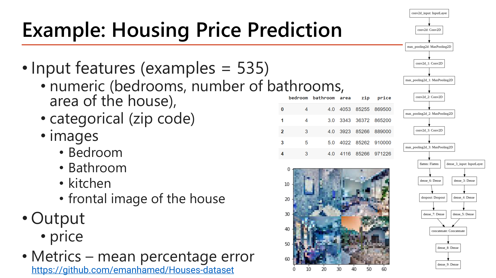
ตัวอย่างรวม: ทำนายราคาบ้านจาก 535 ตัวอย่าง. Input มีสามชนิด: numeric (จำนวนห้องนอน, ห้องน้ำ, พื้นที่), categorical (zip code) และ images (ห้องนอน, ห้องน้ำ, ครัว, ด้านหน้าบ้าน; สี่ภาพถูกต่อเป็นภาพเดียว 64×64). Output คือ price และ metric คือ mean percentage error. กราฟของโมเดลในสไลด์มีสองกิ่ง: กิ่ง CNN (Conv2D + MaxPooling สี่ชุด → Flatten → Dense) สำหรับภาพ และกิ่ง Dense สำหรับข้อมูลตาราง แล้ว Concatenate เข้า Dense ชั้นสุดท้าย. โครงสร้างนี้คือ multi-input model ของหน้า 2 ในกรณีจริง.
loss=["mse", "mse"], loss_weights=[0.8, 0.2] ถ้า loss ของ output แรกเท่ากับ 0.50 และของ output ที่สองเท่ากับ 1.00 loss รวมที่ใช้เทรนคือเท่าใด?Model(inputs=[in_A, in_B], outputs=[main, aux]) และทั้งสอง output ทำนายค่าเดียวกัน ข้อใดเรียก fit ได้ถูกต้อง?aux_output = Dense(1)(hidden2)outputs=[output, aux_output]; loss=["mse", "mse"]; loss_weights=[0.9, 0.1]; label เป็น [y_train, y_train]; evaluate คืน 3 ค่า; predict คืน 2 ค่า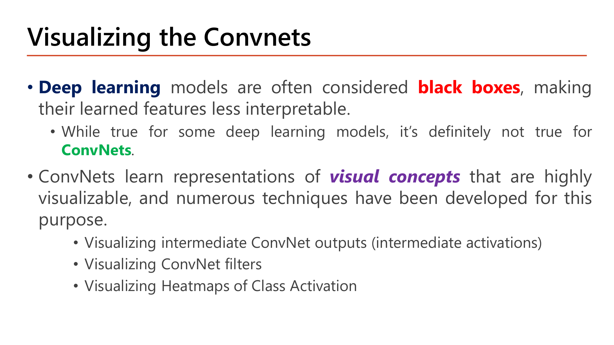
Deep learning models มักถูกมองเป็น black boxes คือ feature ที่เรียนได้ตีความยาก. ข้อนี้จริงกับบางโมเดล แต่ไม่จริงกับ ConvNets. ConvNet เรียน representation ของ visual concepts ซึ่งแสดงเป็นภาพได้ดี. สามเทคนิคที่สไลด์ระบุ:
| เทคนิค | ตอบคำถาม | หัวข้อ |
|---|---|---|
| Visualizing intermediate ConvNet outputs (intermediate activations) | ภาพนี้ถูกแปลงเป็นอะไรในแต่ละ layer | §5 |
| Visualizing ConvNet filters | filter แต่ละตัวตอบสนองต่อ pattern แบบใด | §6 |
| Visualizing Heatmaps of Class Activation | บริเวณใดของภาพทำให้โมเดลตัดสินเป็น class นั้น | §7 |
![Slide: Visualizing Intermediate Activations. To understand how a model processes an input, display its intermediate representations (feature maps). Steps: define a visualization model that outputs intermediate feature maps from each layer; load the input image; convert to NumPy array; normalize the data (e.g. to [0,1]); generate feature maps. Code: model = load_model("cats_and_dogs_small_2.h5"); model.summary() showing conv2d_4 (None,148,148,32) 896; max_pooling (74,74,32); conv2d_5 (72,72,64) 18496; (36,36,64); conv2d_6 (34,34,128) 73856; (17,17,128); conv2d_7 (15,15,128) 147584; (7,7,128); flatten 6272; dropout; dense_2 512 3211776; dense_3 1 513; total 3,453,121](../assets/slides/dl9-p13-visualizing-intermediate-activations.png)
เพื่อเข้าใจว่าโมเดลประมวลผล input อย่างไร ให้แสดง intermediate representations (คือ feature maps) ของมัน. ขั้นตอนตามสไลด์:
!pip install gdown
!gdown --id 18ixz_2j_BJe6vhgbmcgxoN6m9EV-P7D-
from tensorflow.keras.models import load_model
model = load_model("cats_and_dogs_small_2.h5")
model.summary()| โค้ด | ทำอะไร |
|---|---|
| !gdown --id ... | ดาวน์โหลดไฟล์โมเดลที่เทรนไว้แล้วจาก Google Drive |
| load_model("cats_and_dogs_small_2.h5") | โหลดโมเดลทั้งตัว (สถาปัตยกรรม + weight) จากไฟล์ (Lesson 6) |
| model.summary() | แสดง layer ที่จะนำ output มาแสดงเป็นภาพ |
ตรงกับ Total params: 3,453,121 ในสไลด์. จำนวน feature map ที่จะแสดงของ convolution แต่ละชั้นเท่ากับจำนวน filter: 32, 64, 128, 128 แผ่น และขนาดของแต่ละแผ่นคือ 148, 72, 34, 15 pixel ต่อด้าน.
![Slide: Visualizing Feature Maps. The first layer acts as a collection of various edge detectors; activations retain almost all information of the initial picture. As you go higher, activations become increasingly abstract and less visually interpretable, encoding higher-level concepts such as cat ear and cat eye. Higher presentations carry increasingly less information about the visual contents of the image and more about the class. The sparsity of the activations increases with depth: more filters are blank. Grids of feature maps for four conv layers of a cat image](../assets/slides/dl9-p14-visualizing-feature-maps.png)
รูปขวาของสไลด์แสดง feature map ของ convolution สี่ชั้นเมื่อป้อนภาพแมว. ข้อสังเกตสี่ข้อ:
ในรูป แถวบนสุด (layer แรก, 148×148) ยังเห็นโครงร่างแมวทุกช่อง; แถวล่างสุด (layer ที่สี่, 15×15) เป็นช่องสีม่วงทึบเกือบทั้งหมด มีจุดสว่างเพียงไม่กี่ช่อง.
CNN ใช้ learned filters ทำ convolution กับ feature map ของ layer ก่อนหน้า. Filter คือ weight สองมิติที่มีความสัมพันธ์เชิงตำแหน่งต่อกัน จึงวาดเป็นภาพได้. ขั้นตอน:
model.layersget_weights()get_weights() ของ Conv2D คืน list สองตัว: weight shape \((f, f, n_C, n_C')\) และ bias shape \((n_C',)\). สำหรับ conv ชั้นแรกของโมเดลใน §5 คือ (3, 3, 3, 32) และ (32,) ซึ่งรวมได้ \(864 + 32 = 896\) ตรงกับ summary.
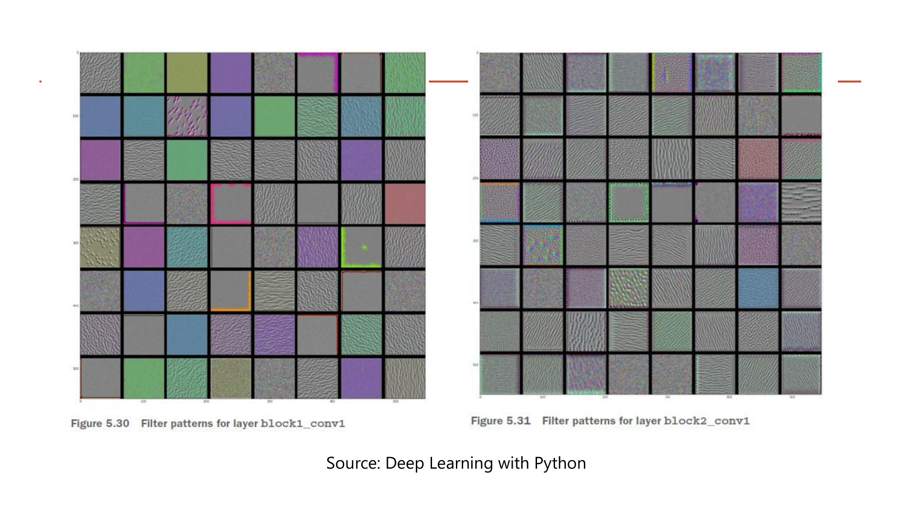
ภาพหน้า 16–17 แสดง pattern ที่ทำให้ filter แต่ละตัวของ VGG16 ตอบสนองแรงที่สุด. block1_conv1 (64 ช่องแรก): filter เข้ารหัสสีพื้นและขอบที่มีทิศทาง (เส้นเฉียง, เส้นตั้ง). block2_conv1: เริ่มเป็น texture ง่ายๆ ที่เกิดจากการผสมขอบกับสี. สอดคล้องกับ §5 ว่า layer แรกคือ edge detectors.
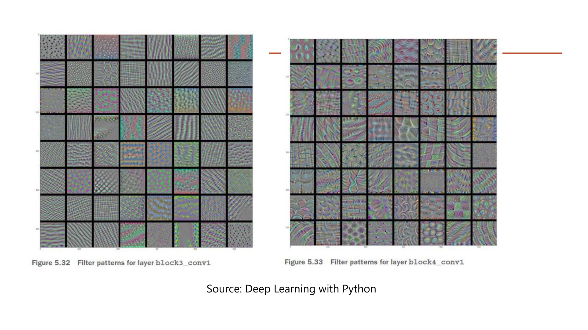
block3_conv1 และ block4_conv1: pattern ซับซ้อนขึ้นตามความลึก เป็น texture ที่คล้ายสิ่งในภาพธรรมชาติ (ลายจุด, ลายคลื่น, ลายตาข่าย, รูปคล้ายขนหรือใบไม้). ลำดับ block1 → block4 คือหลักฐานเชิงภาพของข้อความใน Lesson 7 §2 ว่า layer ลึกรวม feature ง่ายเป็น feature ซับซ้อน และเป็นเหตุผลที่ transfer learning (Lesson 8 §8) นำ layer ต้นไปใช้กับงานอื่นได้.
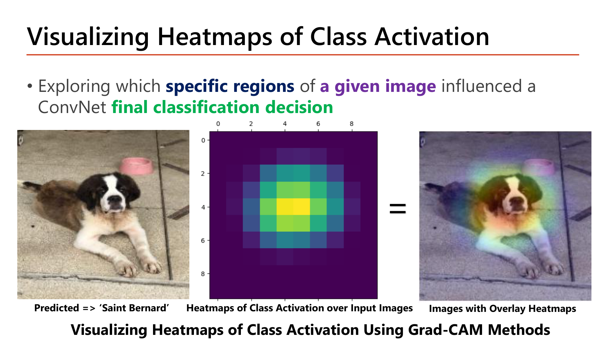
เทคนิคที่สามตรวจว่า specific regions ใดของ a given image มีอิทธิพลต่อ final classification decision ของ ConvNet. ตัวอย่างในสไลด์: โมเดลทำนายภาพเป็น 'Saint Bernard'. Heatmap (ตารางราว 10×10) สว่างที่สุดตรงกลาง และเมื่อซ้อนทับภาพต้นฉบับ บริเวณสว่างตกที่ใบหน้าของสุนัข. โมเดลจึงตัดสินจากใบหน้าสุนัข ไม่ใช่จากพื้นหรือชามสีชมพูด้านหลัง.
![Slide: Grad-CAM is a popular technique for visualizing. It falls under class activation map (CAM) visualization: generating heatmaps that display how important each location in an input image is for a specific class by producing a 2D grid of scores; it also allows locating specific objects. Grad-CAM is a post-training attention technique applied after a network is trained and its parameters are fixed. Example: original image of a dog and a cat, Grad-CAM for Cat highlights the cat, Grad-CAM for Dog highlights the dog](../assets/slides/dl9-p19-grad-cam.png)
Grad-CAM อยู่ในกลุ่ม class activation map (CAM) visualization. CAM สร้าง heatmap ที่แสดงว่าแต่ละตำแหน่งของภาพสำคัญต่อ specific class หนึ่งเพียงใด โดยให้ผลเป็นตารางคะแนน 2 มิติ และใช้ระบุตำแหน่งวัตถุในภาพได้ด้วย. Grad-CAM เป็นเทคนิคแบบ post-training: ใช้หลังเทรนเสร็จและ parameter ถูกตรึงแล้ว ไม่มีการเทรนเพิ่ม.
ตัวอย่างในสไลด์: ภาพเดียวมีทั้งสุนัขและแมว. Grad-CAM 'Cat' สว่างที่ตัวแมวด้านล่าง; Grad-CAM 'Dog' สว่างที่หน้าสุนัขด้านบน. Heatmap จึงขึ้นกับ class ที่ถาม: ภาพเดียวกันให้ heatmap ต่างกันเมื่อถามคนละ class.
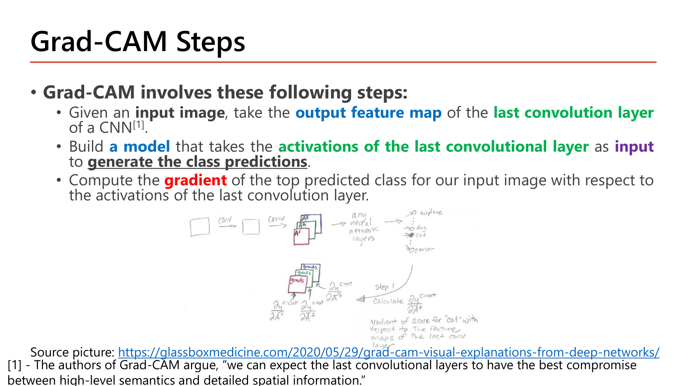
channel ที่ทำให้คะแนนของ class เพิ่มได้น้ำหนักบวกมาก; ReLU ตัดบริเวณที่ผลรวมติดลบทิ้ง เพราะสนใจเฉพาะส่วนที่สนับสนุน class นั้น
Heatmap สว่างที่มุมขวาบนเพียงช่องเดียว. Channel 2 มี alpha ติดลบ คือ feature นั้นลดคะแนนของ class นี้ บริเวณที่ channel 2 แรงจึงถูก ReLU ตัดเป็นศูนย์. สไลด์ตั้งข้อสังเกตว่าสูตรนี้คล้าย CAM เดิม (\(\text{CAM} = \sum_k w_k A^k\)) ต่างกันที่ Grad-CAM ได้น้ำหนักจาก gradient และมี ReLU.
How to visualize: ใน CNN ส่วนใหญ่ feature map มีความกว้างและสูงเล็กกว่าภาพ input. จึงต้อง up-sample heatmap ให้เท่าขนาดภาพต้นฉบับก่อนซ้อนทับ. ในสไลด์ heatmap หยาบขนาดราว 10×10 ช่องถูกขยายเป็นภาพเรียบขนาด 400×400.
# Generate class activation heatmap
heatmap = make_gradcam_heatmap(img_array, model, last_conv_layer_name)| โค้ด | ทำอะไร |
|---|---|
| img_array | ภาพที่เตรียมแล้ว shape (1, สูง, กว้าง, 3) |
| model | โมเดลที่เทรนเสร็จแล้ว (post-training) |
| last_conv_layer_name | ชื่อของ convolution layer ชั้นสุดท้าย (เช่น "block5_conv3" ของ VGG16) ซึ่งเป็น layer ที่ขั้น 1 ใช้ |
| heatmap | ตาราง 2 มิติขนาดเท่า feature map ของ layer นั้น (VGG16: 14×14) ต้อง up-sample ก่อนแสดง |
model.layers และ get_weights() แล้ว normalize เป็น 0–1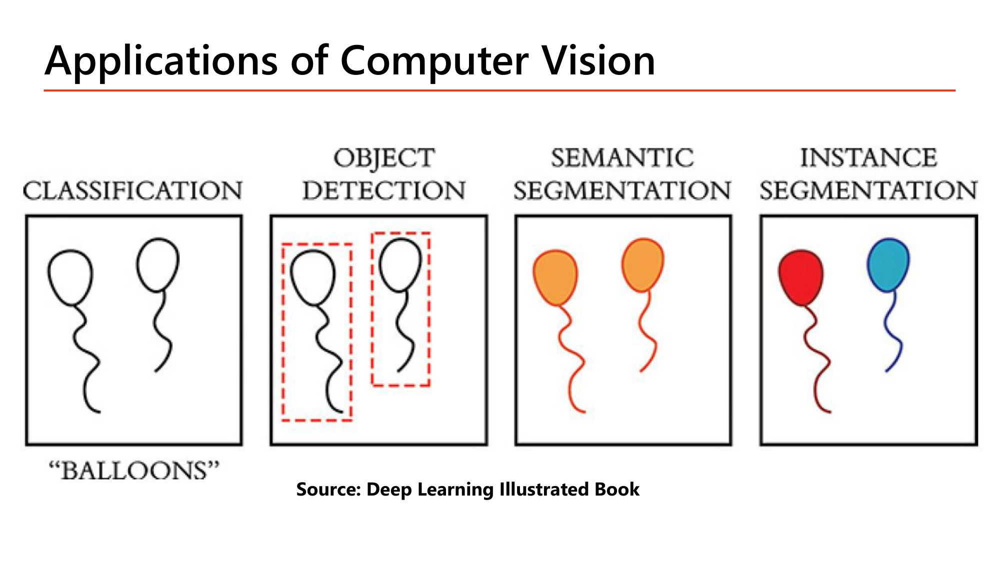
ภาพลูกโป่งสองลูกเดียวกันให้คำตอบต่างกันตามงาน:
| งาน | Output | ในรูป |
|---|---|---|
| Classification | label เดียวของทั้งภาพ | "BALLOONS" |
| Object detection | กรอบ + class ต่อวัตถุ | กรอบประ 2 กรอบ กรอบละลูก |
| Semantic segmentation | class ต่อ pixel; วัตถุ class เดียวกันไม่ถูกแยก | ลูกโป่งสองลูกสีส้มเหมือนกัน |
| Instance segmentation | class ต่อ pixel และแยกแต่ละวัตถุ | ลูกหนึ่งสีแดง อีกลูกสีฟ้า |
ใน self-driving technology การวางเส้นทางต้องอาศัยการ identifying vehicles, pedestrians, roads และ obstacles จาก video frame ของกล้องหน้ารถ. ภาพในสไลด์มีกรอบหลายสิบกรอบ แต่ละกรอบมี label และความมั่นใจ (เช่น person 99%, traffic light 91%). สไลด์ตั้งโจทย์ว่า Autonomous driving application (suppose 80 classes) ซึ่งเป็นจำนวน class ที่ใช้คำนวณขนาด output ของ YOLO ใน §13–14.
Object detection คืองาน localizing one or more objects และ classifying แต่ละวัตถุในภาพ:
Target ของ object detection สำหรับ 3 class เป็น vector 8 ค่า:
$$y = \begin{bmatrix} p_c & b_x & b_y & b_h & b_w & c_1 & c_2 & c_3 \end{bmatrix}^{T}$$ตัวอย่าง: ภาพที่มีวัตถุ class 2 อยู่กลางภาพ ขนาดครึ่งหนึ่งของภาพทั้งสองด้าน: \(y = [1,\ 0.5,\ 0.5,\ 0.5,\ 0.5,\ 0,\ 1,\ 0]\). ภาพที่ไม่มีวัตถุ: \(p_c = 0\) และอีก 7 ค่าไม่ถูกนำมาคิด loss. จำนวนค่าโดยทั่วไปคือ \(5 + K\) เมื่อ \(K\) คือจำนวน class.
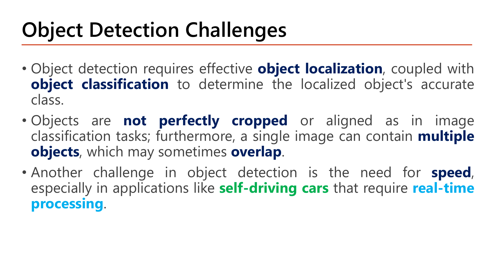
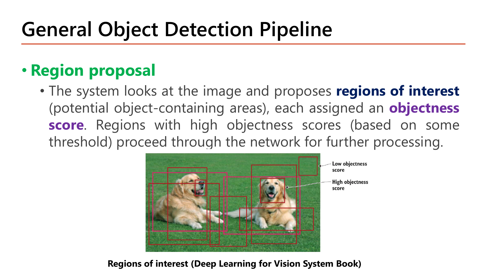
ขั้นที่ 1: Region proposal. ระบบดูภาพแล้วเสนอ regions of interest (บริเวณที่อาจมีวัตถุ) โดยแต่ละบริเวณได้ objectness score. บริเวณที่ objectness score สูง (เกิน threshold ที่กำหนด) ถูกส่งต่อเข้า network. ในรูป กรอบบนพื้นหญ้ามี low objectness score ส่วนกรอบที่ครอบสุนัขมี high objectness score.
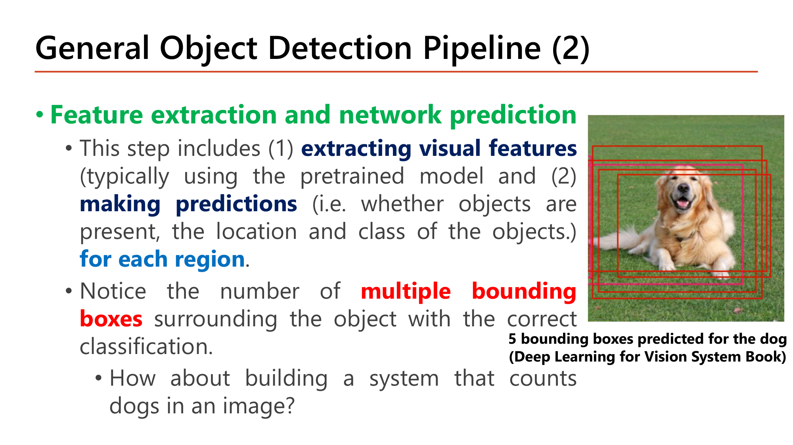
ขั้นที่ 2: Feature extraction and network prediction. ประกอบด้วย (1) extracting visual features (มักใช้ pretrained model จาก Lesson 8) และ (2) making predictions (มีวัตถุหรือไม่, ตำแหน่ง และ class) for each region. ผลคือมี multiple bounding boxes ล้อมวัตถุเดียวกันโดยทุกกรอบจำแนกถูก: ในรูปสุนัขตัวเดียวมี 5 กรอบ. คำถามของสไลด์: ถ้าสร้างระบบนับจำนวนสุนัขจะเกิดอะไร? ระบบจะนับได้ 5 ทั้งที่มี 1 ตัว. จึงต้องมีขั้นที่ 3.
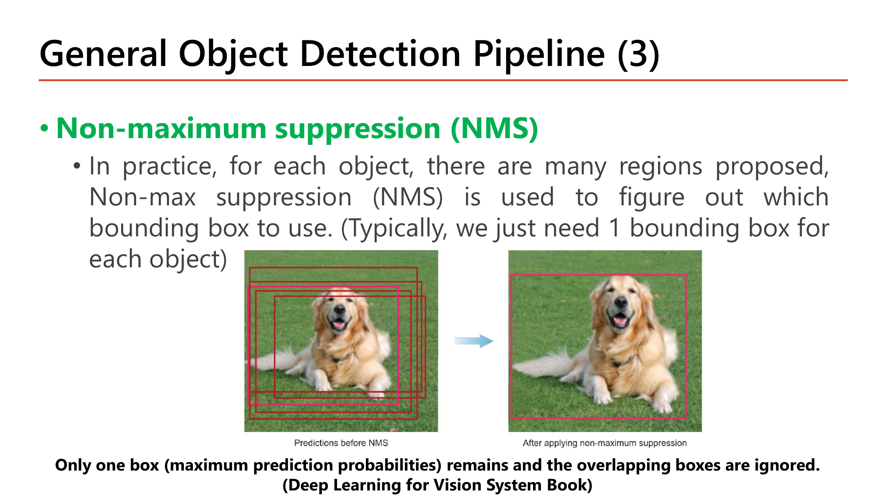
ขั้นที่ 3: Non-maximum suppression (NMS). ในทางปฏิบัติแต่ละวัตถุถูกเสนอหลายบริเวณ. NMS ใช้ตัดสินว่าจะใช้ bounding box ใด (ปกติต้องการ 1 กรอบต่อ 1 วัตถุ). ในรูป: ก่อน NMS มี 5 กรอบ, หลัง NMS เหลือกรอบเดียวที่มี prediction probability สูงสุด และกรอบที่ซ้อนทับถูกทิ้ง.
![Slide: General Object Detection Pipeline (4). Non-maximum suppression (NMS) (continue). Discard all bounding boxes with predictions less than a certain threshold (confidence threshold) of the objectness score. Looping for each class label: select the remaining box with the highest prediction; compute the overlap of this box with the remaining boxes and remove (suppress) boxes that overlap significantly (NMS threshold, e.g. IoU 0.5); go back to select other boxes that are not overlapped and iterate until no more class with predicted boxes](../assets/slides/dl9-p30-pipeline-nms-algorithm.png)
Non-maximum suppression (NMS) (continue): วิธีลดกรอบผู้สมัครให้เหลือกรอบเดียวต่อวัตถุ.
NMS มี threshold สองตัวที่ทำงานคนละจังหวะ: confidence threshold กรองกรอบที่ไม่มั่นใจก่อน loop; NMS threshold (IoU) ตัดสินว่ากรอบใดซ้ำกับกรอบที่เลือกแล้วใน loop. ตัวอย่างคำนวณเต็มอยู่ใน §13 หลังจากนิยาม IoU.
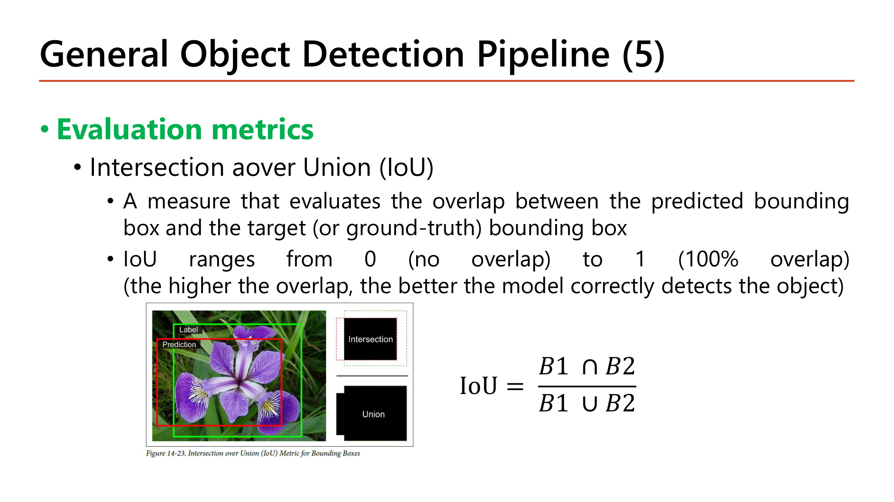
Evaluation metrics ตัวแรกคือ Intersection over Union (IoU): วัดการซ้อนทับระหว่าง predicted bounding box กับ target (ground-truth) bounding box. IoU มีค่าตั้งแต่ 0 (ไม่ซ้อนทับ) ถึง 1 (ซ้อนทับ 100%). ยิ่งซ้อนทับมาก โมเดลยิ่งตรวจจับวัตถุได้ถูกต้อง.
$$\begin{gathered}\text{IoU} = \frac{B_1 \cap B_2}{B_1 \cup B_2}\\[0.4em] = \frac{\text{พื้นที่ซ้อนทับ}}{\text{พื้นที่ } B_1 + \text{พื้นที่ } B_2 - \text{พื้นที่ซ้อนทับ}}\end{gathered}$$ตัวส่วนคือพื้นที่รวมที่สองกรอบครอบ โดยไม่นับส่วนซ้อนทับสองครั้ง
IoU ≈ 0.14. กรอบซ้อนกัน 25% ของพื้นที่แต่ละกรอบ แต่ IoU ต่ำกว่านั้นมากเพราะตัวส่วนคือ union. ที่เกณฑ์ IoU 0.5 กรอบนี้ถือว่าตรวจจับไม่ถูก และใน NMS ถือว่าเป็นคนละวัตถุ (ไม่ถูก suppress).
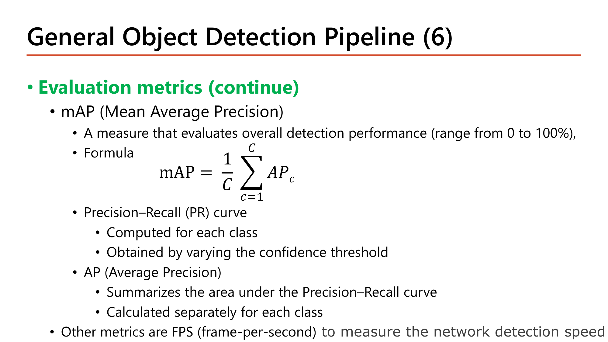
Evaluation metrics (continue): mAP (Mean Average Precision) วัดประสิทธิภาพการตรวจจับโดยรวม (0 ถึง 100%).
$$\text{mAP} = \frac{1}{C} \sum_{c=1}^{C} AP_c$$| คำ | ความหมายตามสไลด์ |
|---|---|
| Precision–Recall (PR) curve | คำนวณต่อ class; ได้จากการเปลี่ยน confidence threshold (threshold สูง ⇒ precision สูง recall ต่ำ) |
| AP (Average Precision) | สรุปพื้นที่ใต้ PR curve; คำนวณแยกต่อ class |
| mAP | ค่าเฉลี่ยของ AP ทุก class (\(C\) = จำนวน class) |
| FPS (frame-per-second) | วัดความเร็วในการตรวจจับของ network |
ตัวอย่าง: 3 class มี AP = 0.80, 0.60, 0.70 ⇒ \(\text{mAP} = (0.80 + 0.60 + 0.70)/3 = 0.70\). Precision และ recall คือค่าเดิมจาก Lesson 1; ใน object detection การทำนายนับเป็น true positive เมื่อ class ถูกและ IoU กับ ground truth ถึงเกณฑ์.
วิธีดั้งเดิม: ใช้ convnet ทำ object detection ด้วย sliding windows detection. เทรน classifier จากภาพที่ครอบพอดี (car / not a car) แล้วนำหน้าต่างสี่เหลี่ยมมา slide ทั่วทั้งภาพด้วย stride ที่กำหนด และจำแนกทุกบริเวณว่ามีวัตถุหรือไม่. ข้อเสีย: computational expensive และ slow จนใช้ไม่ได้.
ต้อง forward convnet 2,025 ครั้งต่อภาพ สำหรับหน้าต่างขนาดเดียว. วัตถุมีหลายขนาดจึงต้องทำซ้ำกับหน้าต่างหลายขนาด. จำนวนนี้ใกล้กับ ~2,000 regions ที่ R-CNN ใช้ ซึ่งใช้เวลา 50 วินาทีต่อภาพ (ตารางหน้า 35).
R-CNN family มี 3 รุ่นหลัก: R-CNN, Fast R-CNN และ Faster R-CNN. R-CNN และ Fast R-CNN ใช้ Selective Search algorithm (อัลกอริทึมภายนอก ไม่ใช่ neural network) เสนอ ROI. Faster R-CNN เป็นระบบ end-to-end ที่ใช้ Region Proposal Network (RPN) เสนอ ROI.
![Slide: R-CNN Family. R-CNN was an early successful use of CNNs for object detection (PASCAL VOC-2012, ILSVRC-2013), combining standalone algorithms. Fast R-CNN is faster since a convolution operation is done only once per image and all components are in one CNN network. Faster R-CNN combines the region proposal algorithm (RPN) into the end-to-end deep learning network. Table: mAP on PASCAL VOC2007 66.0%, 66.9%, 66.9%; test time per image 50 seconds, 2 seconds, 0.2 seconds; speed-up from R-CNN 1x, 25x, 250x](../assets/slides/dl9-p35-r-cnn-family.png)
| R-CNN | Fast R-CNN | Faster R-CNN | |
|---|---|---|---|
| mAP on PASCAL VOC2007 | 66.0% | 66.9% | 66.9% |
| Features | (1) selective search สกัด ~2,000 ROI ต่อภาพ (2) ConvNet สกัด feature ของแต่ละ region (3) classification และ bounding box prediction | ภาพผ่าน CNN ครั้งเดียวได้ feature map; selective search ทำบน feature map นั้น. รัน ConvNet 1 ครั้งแทน 2,000 ครั้ง | แทน selective search ด้วย region proposal network (RPN). เป็น end-to-end deep learning network |
| Limitations | คำนวณนานเพราะแต่ละ region ผ่าน CNN แยกกัน และใช้สามโมเดล | selective search ยังช้า | object proposal ยังใช้เวลา และระบบทำงานต่อกันเป็นทอด |
| Test time per image | 50 seconds | 2 seconds | 0.2 seconds |
| Speed-up from R-CNN | 1x | 25x | 250x |
ตรวจตัวเลข speed-up: \(50 / 2 = 25\) และ \(50 / 0.2 = 250\). mAP แทบไม่เปลี่ยน (66.0% → 66.9%) แต่เร็วขึ้น 250 เท่า. 0.2 วินาทีต่อภาพคือ 5 FPS ซึ่งยังไม่ถึง real-time.
![Slide: Disadvantage. The traditional region-based approach (R-CNN family) is computationally expensive because it performs as a multi-stage detector: the model proposes a set of regions of interest and then a classifier processes the region candidates. With a small stride, all little regions passing through convnets incur very high computational cost. One-stage detector takes a different approach: it runs both predictions directly in one shot, predicting object locations and classes directly, enabling efficient real-time detection (SSD, YOLO)](../assets/slides/dl9-p36-disadvantage-multi-stage.png)
แนวทาง region-based ทั้งหมด (เช่น R-CNN family) computational expensive เพราะทำงานเป็น multi-stage detector: โมเดลเสนอ ROI ชุดหนึ่งก่อน แล้ว classifier จึงประมวลผล region เหล่านั้นเพื่อทำนาย class. เมื่อใช้ stride เล็ก region จำนวนมากที่ผ่าน convnet ทำให้ต้นทุนสูงมาก (เทรนนาน และช้าตอน inference).
One-stage detector ใช้แนวทางต่าง: ทำนายทั้งสองอย่างโดยตรงในครั้งเดียว (one shot). ทำนายตำแหน่งและ class ของวัตถุโดยตรง จึงตรวจจับแบบ real-time ได้ เช่น SSD, YOLO.
![Slide: Initial Convnet Model for One-stage Detector. A convnet whose final layer outputs pc (background), bx (X coordinate), by (Y coordinate), bh (height), bw (width), c1 CAT, c2 DOG, c3 DUCK, compared with ground truth vectors for one object and no object. Code: base_model = keras.applications.xception.Xception(weights="imagenet", include_top=False); avg = GlobalAveragePooling2D()(base_model.output); class_output = Dense(n_classes, activation="softmax")(avg); loc_output = Dense(4)(avg); model = Model(inputs=base_model.input, outputs=[class_output, loc_output]); model.compile(loss=["sparse_categorical_crossentropy", "mse"], loss_weights=[0.8, 0.2], optimizer=optimizer, metrics=["accuracy"])](../assets/slides/dl9-p37-initial-convnet-one-stage.png)
โมเดลตั้งต้นสำหรับภาพที่มีวัตถุเดียว: CNN ที่ layer สุดท้าย (Layer L) ให้ output 8 ค่าตาม target ของ §8. \(p_c\) บอกว่าเป็นวัตถุหรือ Background; \(b_x\) = X coordinate; \(b_y\) = Y coordinate; \(b_h\) = Height; \(b_w\) = Width; \(c_1, c_2, c_3\) = CAT, DOG, DUCK. สไลด์เทียบ ground truth สองกรณี: ภาพที่มี one object และภาพที่ no object (\(p_c = 0\)).
โค้ดจาก Hands-on ML ใช้ทุกอย่างที่เรียนมา: transfer learning (Lesson 8 §9), Global Average Pooling (Lesson 7 §9) และ multi-output model (§4).
base_model = keras.applications.xception.Xception(weights="imagenet",
include_top=False)
avg = keras.layers.GlobalAveragePooling2D()(base_model.output)
class_output = keras.layers.Dense(n_classes, activation="softmax")(avg)
loc_output = keras.layers.Dense(4)(avg)
model = keras.models.Model(inputs=base_model.input,
outputs=[class_output, loc_output])
model.compile(loss=["sparse_categorical_crossentropy", "mse"],
loss_weights=[0.8, 0.2], # depends on what you care most about
optimizer=optimizer, metrics=["accuracy"])| โค้ด | ทำอะไร |
|---|---|
| Xception(weights="imagenet", include_top=False) | pretrained backbone ไม่รวม classifier |
| avg = GlobalAveragePooling2D()(base_model.output) | เฉลี่ย feature map แต่ละ channel เป็น 1 ค่า ได้ vector (Xception: 2,048 ค่า) |
| class_output = Dense(n_classes, activation="softmax")(avg) | หัว classification: ความน่าจะเป็นของแต่ละ class |
| loc_output = Dense(4)(avg) | หัว localization: 4 ค่าของกรอบ. เป็น regression จึงไม่มี activation |
| Model(inputs=base_model.input, outputs=[class_output, loc_output]) | โมเดลสอง output จาก tensor avg ตัวเดียวกัน |
| loss=["sparse_categorical_crossentropy", "mse"] | loss ต่อหัว: cross-entropy สำหรับ class, MSE สำหรับพิกัด |
| loss_weights=[0.8, 0.2] | ให้น้ำหนัก classification 0.8 และ localization 0.2 ("depends on what you care most about") |
ข้อจำกัด: โมเดลนี้ให้กรอบเดียวต่อภาพ. ภาพที่มีหลายวัตถุต้องใช้โมเดลนี้กับหลายบริเวณ ซึ่งนำกลับไปสู่ปัญหา sliding windows. หน้า 38–39 แก้ด้วยการทำให้ทั้ง network เป็น convolution.
![Slide: Convolutional Implementation. Object detection networks should be fully convolutional: the network does not contain any fully-connected (FC) layers. Faster because it contains only convolution operations and no FC layers. Top: 32x32x3, conv 3x3 10 filters gives 30x30x10, pool gives 15x15x10, conv 5x5 20 filters stride 2 gives 6x6x20, pool gives 3x3x20, FC 200, FC 200, softmax (4). Bottom: same up to 3x3x20, then filter 3x3 #filter=200 gives 1x1x200, filter 1x1 #filter=200 gives 1x1x200, filter 1x1 #filter=4 gives 1x1x4](../assets/slides/dl9-p38-convolutional-implementation-fc-to-conv.png)
Object detection network ควรเป็น fully convolutional คือไม่มี fully-connected (FC) layer ที่ปกติอยู่ท้าย network. ผลคือ Faster เพราะมี only convolution operations และไม่มี FC layer.
สไลด์เทียบสอง network บนภาพ 32×32×3 เดียวกัน. แถวบนคือ CNN ของ Lesson 7 §7 ที่ลงท้ายด้วย FC 200, FC 200 และ softmax 4 class. แถวล่างแทน FC ทั้งสามด้วย convolution: filter 3x3 #filter=200 p = 0, s = 1 แล้ว filter 1x1 #filter=200 p = 0, s = 1 แล้ว filter 1x1 #filter=4 p = 0, s = 1.
output ของ conv: \(3 - 3 + 1 = 1\) ⇒ 1×1×200
จำนวน parameter เท่ากันทุกชั้น และบนภาพ 32×32 สอง network คำนวณค่าเดียวกัน: output 1×1×4 คือ 4 คะแนนของ class. ความต่างปรากฏเมื่อภาพใหญ่ขึ้น: FC รับได้เฉพาะ 180 ค่า แต่ convolution เลื่อนไปบน feature map ขนาดใดก็ได้. หมายเหตุ: แถวบนของสไลด์พิมพ์ขนาดหลัง pooling ชั้นแรกว่า "15x30x10" ค่าที่ถูกคือ 15×15×10 ตามแถวล่าง.
![Slide: Convolutional Implementation. How convolutional layers are mapped to sliding windows detection (image made bigger by cutting the middle layer): 32x32x3, conv 3x3 gives 30x30x10, pool gives 15x15x10, filter 3x3 #filter=200 gives 13x13x200, filter 1x1 #filter=200 gives 13x13x200, filter 1x1 #filter=4 gives 13x13x4. Instead of traditional sliding windows or proposing ROIs, this convolutional implementation can implement an entire image convolutionally, making all predictions at the same time by one forward pass through the convnet (computationally efficient)](../assets/slides/dl9-p39-convolutional-implementation-sliding.png)
หน้า 39 ตัด layer กลางออก (conv 5×5 และ pooling ชั้นที่สอง) ซึ่งเทียบเท่ากับการป้อนภาพที่ใหญ่กว่าขนาดที่ classifier ถูกออกแบบ. ลำดับคือ 32×32×3 → 30×30×10 → 15×15×10 แล้วเข้าสาม convolution เดิม: filter 3x3 #filter=200 p = 0, s = 1 ให้ \(15 - 3 + 1 = 13\) คือ 13×13×200; filter 1x1 #filter=200 p = 0, s = 1 ให้ 13×13×200; filter 1x1 #filter=4 p = 0, s = 1 ให้ 13×13×4.
Output ไม่ใช่ 1×1×4 อีกต่อไป แต่เป็นตาราง 13×13 ที่แต่ละช่องมี 4 คะแนน. แต่ละช่องคือผลของ classifier บนหน้าต่างหนึ่งตำแหน่งของภาพ (กรอบแดงในรูป). จึงได้ \(13 \times 13 = 169\) หน้าต่างจากการ forward ครั้งเดียว และการคำนวณของหน้าต่างที่ซ้อนกันถูกใช้ร่วมกัน.
ข้อสรุปของสไลด์: แทน sliding windows แบบดั้งเดิมหรือการเสนอ ROI, convolutional implementation สามารถ implement an entire image convolutionally ทำนายทั้งหมดพร้อมกันด้วย one forward pass through the convnet จึง computational efficient.
class_output = Dense(n_classes, activation="softmax")(avg), loc_output = Dense(4)(avg), loss=["sparse_categorical_crossentropy", "mse"], loss_weights=[0.8, 0.2]![Slide: You Only Look Once (YOLO) Algorithm. YOLO is a popular one-stage detector that is fast and accurate (able to run in real time). The basic idea is to split up an image into a grid and run the algorithm convolutionally on each grid of the entire image; each cell directly predicts a bounding box and object classification. At test time YOLO only looks once at the image (one forward propagation pass). A 224x224 image with a grid goes through a deep CNN to an output of 5x5x8 with vector pc, bx, by, bh, bw, c1, c2, c3 where C1 = car, C2 = traffic sign, C3 = pedestrian. Problem of sliding windows: not accurate bounding boxes](../assets/slides/dl9-p40-yolo-algorithm.png)
YOLO เป็น one-stage detector ที่ fast และ accurate (รันแบบ real time ได้). แนวคิดพื้นฐาน: แบ่งภาพเป็น grid แล้วรัน algorithm convolutionally บน each grid ของทั้งภาพ. แต่ละ cell ทำนาย bounding box และ class โดยตรง. ตอน test YOLO "only looks once": forward propagation ครั้งเดียวได้คำทำนายทั้งหมด.
YOLO แก้ปัญหาของ sliding windows ที่สไลด์ระบุว่า "not accurate bounding boxes": หน้าต่างมีขนาดและตำแหน่งตายตัว แต่ YOLO ให้แต่ละ cell ทำนาย \(b_x, b_y, b_h, b_w\) เป็นตัวเลข กรอบจึงมีขนาดและตำแหน่งใดก็ได้.
ตัวอย่างในสไลด์: ภาพ 224×224 ผ่าน Deep CNN ได้ output 5×5×8. 5×5 คือ grid; 8 คือ \([p_c, b_x, b_y, b_h, b_w, c_1, c_2, c_3]\) ต่อ cell โดย \(C_1\) = car, \(C_2\) = traffic sign, \(C_3\) = pedestrian. รวม \(5 \times 5 \times 8 = 200\) ค่า. ตอนเทรน ground truth มี shape เดียวกับ prediction.
![Slide: How YOLO Work. The YOLO network splits the input image into a grid of SxS cells. If the center of the ground truth box falls into a cell, that cell is responsible for detecting the existence of that object. Each grid cell predicts B bounding boxes and their objectness score along with class predictions. If the bounding box contains an object, the network predicts the probability of K classes. Total number of predicted values S*S*(5+K)*B. Diagram: 13x13 grid, cell at the center of the ground truth, Box 1, Box 2, Box 3 with attributes tx, ty, tw, th, Po, P1...Pc](../assets/slides/dl9-p41-how-yolo-work.png)
ต่อกรอบ: 4 พิกัด + 1 objectness + K class; ต่อ cell มี B กรอบ; ทั้งภาพมี S×S cell
Output มี shape (13, 13, 255) ตรงกับ ENCODING (m, 13, 13, 255) ของ YOLOv3 ในหน้า 48. กรณีหน้า 40 คือ \(S = 5, B = 1, K = 3\): \(5 \times 5 \times (5 + 3) \times 1 = 200\).
![Slide: Anchor Boxes are pre-defined box shapes that help the algorithm capture the aspect ratio and the size of objects in a grid cell. Associate n predictions with the n anchor boxes. A 19x19 grid on a street image; Anchor 1 is a wide box and Anchor 2 a tall box, both centred on the same cell (a car and a pedestrian). Output dimension: 19, 19, 2, 8 or 19, 19, 16. With two anchor boxes each object in training images is assigned to the grid cell that contains the object's midpoint; choose the anchor box with highest IoU with the ground truth](../assets/slides/dl9-p42-anchor-boxes.png)
ปัญหา: ถ้า cell หนึ่งทำนายได้กรอบเดียว วัตถุสองชิ้นที่จุดกึ่งกลางตก cell เดียวกัน (ในรูปคือรถกับคนเดินถนนที่ยืนหน้ารถ) จะตรวจจับได้ชิ้นเดียว. Anchor boxes คือรูปทรงกรอบ pre-defined box ที่ช่วยให้อัลกอริทึม capture the aspect ratio & the size of objects ใน grid cell. หลักคือจับคู่ n predictions กับ n anchor boxes.
ในรูป: Anchor 1 เป็นกรอบแนวนอน (เหมาะกับรถ), Anchor 2 เป็นกรอบแนวตั้ง (เหมาะกับคน). คำถามของสไลด์ "What is the output dimension?" สำหรับ grid 19×19, 2 anchor, 3 class:
$$\begin{gathered}19 \times 19 \times 2 \times 8\\ \text{หรือ}\quad 19 \times 19 \times 16 \text{ (easy implement)}\end{gathered}$$ทั้งสองมีจำนวนค่าเท่ากัน (\(2 \times 8 = 16\) ต่อ cell; รวม \(19 \times 19 \times 16 = 5{,}776\) ค่า). แบบที่สองต่อ vector ของสอง anchor เป็น 16 channel.
การกำหนด ground truth: วัตถุแต่ละชิ้นในภาพ training ถูกกำหนดให้ grid cell ที่มี midpoint ของวัตถุ. ใน cell นั้นเลือก anchor box ที่มี highest IoU with the ground truth.
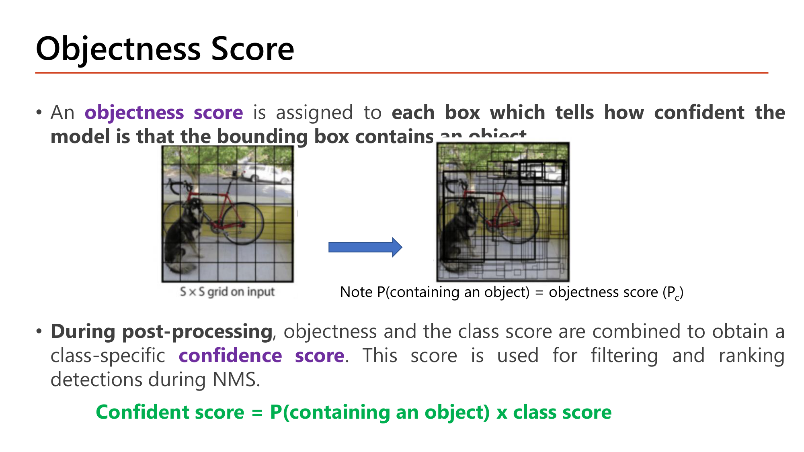
objectness score ถูกกำหนดให้ each box which tells how confident the model is that the bounding box contains an object: \(P(\text{containing an object}) = p_c\). During post-processing objectness และ class score ถูกรวมเป็น class-specific confidence score ซึ่งใช้กรองและจัดอันดับการตรวจจับใน NMS.
Confident score = P(containing an object) x class score
ตัวอย่าง: กรอบหนึ่งมี \(p_c = 0.9\) และ class score ของ "car" = 0.8, "pedestrian" = 0.1 ⇒ confidence score ของ car = \(0.9 \times 0.8 = 0.72\); ของ pedestrian = \(0.9 \times 0.1 = 0.09\). กรอบที่ \(p_c\) ต่ำจะได้ confidence ต่ำทุก class แม้ class score สูง.
![Slide: Non-max Suppression (NMS). Example of suppressing candidate boxes. Discard boxes with predictions below a confidence threshold of the objectness score, for example 0.7. Loop for each class: select the box with the highest prediction (green box 0.9); compute overlap, suppress those with significant overlap (IoU 0.5): suppress the blue box (0.8) and the red box (0.7). Select other boxes until no class remains: the right orange box (0.9), then the left orange box (0.8), and none for pedestrian. Image: three car boxes 0.7, 0.9, 0.8; two traffic sign boxes 0.8, 0.9; one pedestrian box 0.2. C1 = car, C2 = traffic sign, C3 = pedestrian](../assets/slides/dl9-p44-nms-example.png)
กรอบ pedestrian (0.2) ถูกทิ้ง. เหลือ 5 กรอบ (0.7 ไม่ต่ำกว่า threshold จึงยังอยู่)
เลือกกรอบเขียว (0.9)
กรอบน้ำเงิน (0.8) และกรอบแดง (0.7) ถูก suppress. ไม่มีกรอบ car เหลือ
กรอบส้มซ้าย (0.8) อยู่คนละตำแหน่ง IoU = 0 จึงไม่ถูก suppress
ไม่มีกรอบเหลือให้ suppress
ไม่มีกรอบเหลือตั้งแต่ขั้นที่ 1 ⇒ ไม่เลือก
ผลสุดท้าย 3 กรอบ: car 0.9, traffic sign 0.9, traffic sign 0.8. จุดสำคัญสองข้อ: (1) กรอบ 0.8 ของ car ถูกทิ้งแต่กรอบ 0.8 ของ traffic sign ถูกเก็บ การตัดสินขึ้นกับการซ้อนทับ ไม่ใช่คะแนน; (2) NMS ทำแยกต่อ class กรอบต่าง class ที่ซ้อนกันจึงไม่ suppress กัน.
![Slide: Handling Objects of Different Scales. To handle objects of varying scales, some approaches preprocess the image at different sizes and merge the results. Alternatively YOLO achieves a similar outcome by using convolution layers of different sizes (e.g. different strides) within a single network, leveraging feature maps from multiple layers while sharing parameters. Image: a large horse in front and two small horses behind, with small red boxes on the large horse's body. Can you see a horse in the red box?](../assets/slides/dl9-p45-different-scales.png)
ภาพในสไลด์มีม้าตัวใหญ่ใกล้กล้องและม้าตัวเล็กสองตัวด้านหลัง. กรอบแดงขนาดเล็กบนลำตัวม้าตัวใหญ่เห็นเพียงขนสีน้ำตาลกับขาว ("Can you see a horse in the red box?"): cell เล็กเกินกว่าจะเห็นวัตถุใหญ่ทั้งตัว แต่พอดีกับม้าตัวเล็กด้านหลัง.
เพื่อรับมือวัตถุ varying scales บางแนวทางประมวลผลภาพหลายขนาดแล้วรวมผล. YOLO ได้ผลแบบเดียวกันด้วยการ using convolution layers of different sizes (เช่น strides ต่างกัน) ภายใน network เดียว จึงใช้ feature map จากหลาย layer โดยแชร์ parameter กับทุกวัตถุ.
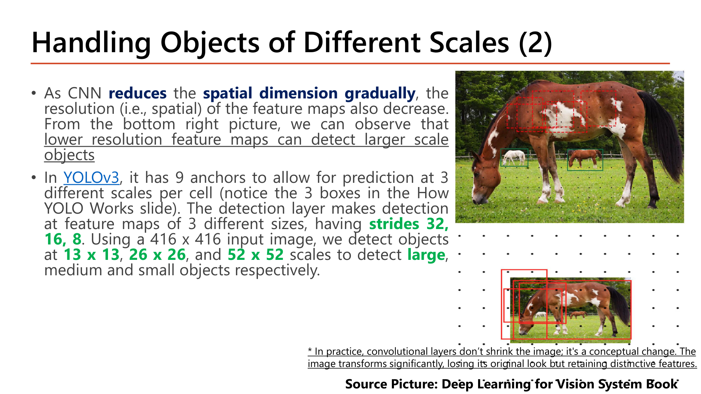
เมื่อ CNN reduces spatial dimension gradually ความละเอียดของ feature map ก็ลดลง. ข้อสังเกตของสไลด์: lower resolution feature maps can detect larger scale objects เพราะ cell หนึ่งของ feature map หยาบครอบพื้นที่ภาพกว้าง.
YOLOv3 มี 9 anchor เพื่อทำนายที่ 3 scale (3 กรอบต่อ cell ต่อ scale). Detection layer ทำงานที่ feature map 3 ขนาด ซึ่งมี strides 32, 16, 8. ด้วยภาพ input 416×416 จะตรวจจับที่ 13 x 13, 26 x 26 และ 52 x 52 เพื่อตรวจวัตถุ large, medium และ small ตามลำดับ.
YOLOv3 ทำนาย 10,647 กรอบต่อภาพ กรอบละ 85 ค่า. Stride 32 ให้ cell ที่ครอบ 32×32 pixel (grid 13×13 สำหรับวัตถุใหญ่); stride 8 ให้ cell 8×8 pixel (grid 52×52 สำหรับวัตถุเล็ก). NMS ลดกรอบเหล่านี้เหลือไม่กี่กรอบ. หมายเหตุท้ายสไลด์: ในทางปฏิบัติ convolutional layer ไม่ได้ "ย่อภาพ" ตรงๆ; feature map เสียหน้าตาเดิมของภาพแต่เก็บ feature เด่นไว้.
![Slide: YOLOv3 Architecture: A Classic YOLO Example. YOLO architecture was inspired by GoogLeNet (Inception) for feature extraction, combining 1x1 and 3x3 convolutions in sequential convolutions; inspired by ResNet it incorporates skip connections. The authors called this Darknet. YOLOv3 uses Darknet-53 (53 layers, trained on ImageNet); 53 more layers are stacked for detection, giving a 106 layer fully convolutional architecture, which makes YOLOv3 slower than YOLOv2 but with a great boost in detection accuracy. Diagram with detection layers at scale 1 (stride 32, layer 84), scale 2 (stride 16, layer 94), scale 3 (stride 8, layer 106), upsampling layers and concatenation](../assets/slides/dl9-p47-yolov3-architecture.png)
แผนภาพแสดง detection layer สามจุด: scale 1 (stride 32) ที่ layer 84, scale 2 (stride 16) ที่ layer 94 และ scale 3 (stride 8) ที่ layer 106. ระหว่าง scale มี upsampling layer ขยาย feature map แล้ว concatenation กับ feature map ที่ละเอียดกว่าจาก layer ก่อนหน้า (layer 61 และ 36) เพื่อให้ scale ละเอียดได้ทั้งความหมายระดับสูงและรายละเอียดตำแหน่ง.
![Slide: Summary for YOLO3. YOLOv3 (2018) is a classic YOLO architecture for understanding grid-based, anchor-based, and multi-scale object detection; the last version by Joseph Redmon. Input: batch of images (m, 416, 416, 3). Architecture: IMAGE -> DEEP CNN -> ENCODING (m, 13, 13, 255), (m, 26, 26, 255), (m, 52, 52, 255). Output: list of bounding boxes with classes, each represented by 6 numbers (pc, bx, by, bh, bw, c); expanding c into an 80-dimensional vector gives 85 numbers. YOLO predicts boxes as displacements from anchors. Select boxes using non-max suppression with score-thresholding. Advantage: accurate bounding boxes compared to YOLO2 but more computational resources](../assets/slides/dl9-p48-summary-yolo3.png)
YOLOv3 (2018) เป็นตัวอย่างสำหรับเข้าใจ object detection แบบ grid-based, anchor-based และ multi-scale. เป็นรุ่นสุดท้ายที่ Joseph Redmon ผู้สร้าง YOLO มีส่วนร่วม.
| ส่วน | รายละเอียดตามสไลด์ |
|---|---|
| Input | batch ของภาพ shape (m, 416, 416, 3) |
| Architecture | IMAGE (m, 416, 416, 3) → DEEP CNN → (1) ENCODING (m, 13, 13, 255) (2) ENCODING (m, 26, 26, 255) (3) ENCODING (m, 52, 52, 255) |
| Output | รายการ bounding box พร้อม class. แต่ละกรอบแทนด้วย 6 ตัวเลข \((p_c, b_x, b_y, b_h, b_w, c)\). ถ้าขยาย \(c\) เป็น vector 80 มิติ จะเป็น 85 ตัวเลข: \(5 + 80 = 85\) |
| หมายเหตุ | YOLO ไม่ทำนายกรอบโดยตรง แต่ทำนายเป็น displacement จาก anchor |
| คัดกรอบ | Non-max suppression: score-thresholding ทิ้งกรอบที่คะแนนของ class ต่ำกว่า confidence threshold แล้วใช้ IoU ตัดกรอบซ้ำ |
| Advantages | กรอบแม่นกว่า YOLO2 แต่มักใช้ทรัพยากรคำนวณมากกว่า |
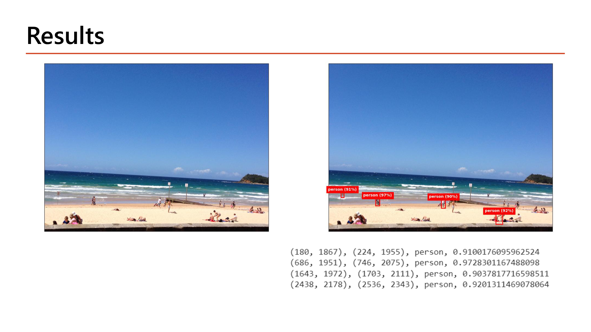
ผลลัพธ์ที่พิมพ์มีหนึ่งบรรทัดต่อกรอบที่ผ่าน NMS: พิกัดมุมสองมุม, class และ confidence.
| มุมที่ 1 (x, y) | มุมที่ 2 (x, y) | class | confidence | กว้าง × สูง (pixel) |
|---|---|---|---|---|
| (180, 1867) | (224, 1955) | person | 0.910 | 44 × 88 |
| (686, 1951) | (746, 2075) | person | 0.973 | 60 × 124 |
| (1643, 1972) | (1703, 2111) | person | 0.904 | 60 × 139 |
| (2438, 2178) | (2536, 2343) | person | 0.920 | 98 × 165 |
ทุกกรอบสูงกว่ากว้าง (อัตราส่วนราว 1:2) ตามรูปร่างของคนยืน และมีขนาดไม่ถึง 100 × 170 pixel ในภาพที่กว้างกว่า 2,500 pixel. คนขนาดเล็กเช่นนี้ถูกตรวจจับได้จาก grid ละเอียด (stride 8). ค่า 91%, 97%, 90%, 92% บนภาพคือ confidence ที่ปัดเศษ.
![Slide: YOLO Has Continued to Evolve. YOLOv1, YOLOv2, YOLOv3, later YOLO families, modern YOLO models. What has remained: one-stage detection; predict bounding boxes + object classes; multi-scale features; designed for efficient / real-time object detection. What has evolved: better backbone and feature extraction; better multi-scale feature fusion; improved bounding-box prediction and training losses; some modern detectors are anchor-free; improved accuracy-speed-model size trade-offs. The fundamental problem remains: Where is the object? What is it? How confident are we?](../assets/slides/dl9-p50-yolo-continued-to-evolve.png)
YOLOv1 → YOLOv2 → YOLOv3 → YOLO รุ่นหลัง → modern YOLO models.
| What has remained? | What has evolved? |
|---|---|
| One-stage detection: ทำนายวัตถุโดยตรงจาก image features | Better backbone and feature extraction |
| Predict bounding boxes + object classes | Better multi-scale feature fusion |
| Use multi-scale features เพื่อตรวจวัตถุหลายขนาด | Improved bounding-box prediction and training losses |
| Designed for efficient / real-time object detection | Some modern detectors are anchor-free |
| Improved accuracy–speed–model size trade-offs |
ข้อสรุปของสไลด์: รายละเอียดการ implement เปลี่ยนไป แต่โจทย์พื้นฐานของ object detection ยังเดิม: Where is the object? What is it? How confident are we? สามคำถามนี้ตรงกับสามส่วนของ target: กรอบ \((b_x, b_y, b_h, b_w)\), class \((c_1 \ldots c_K)\) และ \(p_c\). กล่องด้านขวาสรุปสิ่งที่เรียน (Bounding boxes, IoU, Confidence, NMS, Multi-scale features, One-stage detection) และขั้นตอนใช้ framework สมัยใหม่: Load pretrained model → Run inference → Fine-tune on custom data → Evaluate → Deploy.
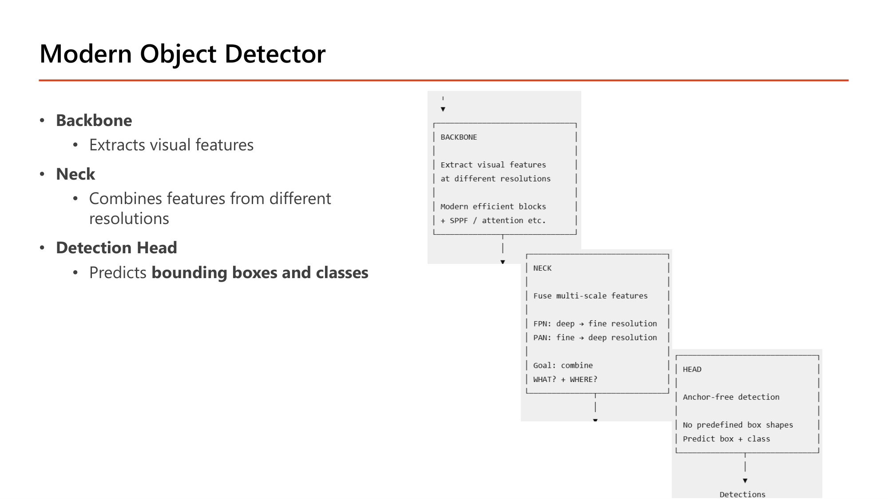
| ส่วน | หน้าที่ตามสไลด์ | รายละเอียดในแผนภาพ | เทียบกับ YOLOv3 |
|---|---|---|---|
| Backbone | Extracts visual features | สกัด feature ที่หลายความละเอียด; modern efficient blocks + SPPF / attention | Darknet-53 |
| Neck | Combines features from different resolutions | Fuse multi-scale features. FPN: deep → fine resolution; PAN: fine → deep resolution. Goal: combine WHAT? + WHERE? | upsampling + concatenation |
| Detection Head | Predicts bounding boxes and classes | Anchor-free detection: no predefined box shapes; predict box + class | detection layers ที่ 3 scale (anchor-based) |
"WHAT + WHERE" ของ neck: feature map ชั้นลึกรู้ว่าเป็นวัตถุอะไร (semantic) แต่ตำแหน่งหยาบ; feature map ชั้นต้นตำแหน่งละเอียดแต่ความหมายน้อย. การรวมสองทิศ (FPN และ PAN) ให้ทุก scale มีทั้งสองอย่าง.
| Concept | YOLOv3 | Modern Detectors |
|---|---|---|
| One-stage detection | ✓ | ✓ |
| CNN feature extraction | ✓ | ✓ |
| Multi-scale features | ✓ | ✓ |
| Bounding-box prediction | ✓ | ✓ |
| Anchor boxes | ✓ | Not always |
| NMS | ✓ | Common, but not universal |
| Backbone → Neck → Head | Can be interpreted this way | Common architectural view |
สี่แถวแรกเหมือนกัน. ความต่างอยู่ที่สามแถวล่าง: anchor boxes และ NMS ซึ่งเป็นแกนของ YOLOv3 (§13) ไม่จำเป็นเสมอไปในรุ่นใหม่.
![Slide: Beyond CNN-based Object Detection: Transformers. Transformers can also be used for object detection. DETR (2020), DEtection TRansformer: formulates detection as set prediction; uses object queries to predict objects; predicts class + bounding box; models global relationships using attention; original DETR does not require anchors or NMS; inspired many subsequent Transformer-based detectors. CNN-based detectors remain highly relevant, especially when speed and efficient deployment matter. Later: RT-DETR, Transformer-based detection designed for real-time performance. Flow: image, feature extraction, transformer, object queries, object 1/2/3 class + box](../assets/slides/dl9-p53-beyond-cnn-detr.png)
Transformers can also be used for object detection. ตัวอย่างคือ DETR (2020) — DEtection TRansformer:
ลำดับในแผนภาพ: Image → Feature Extraction → Transformer → Object Queries → Object 1/2/3 → Class + Box. หมายเหตุ: CNN-based detector ยังสำคัญมาก โดยเฉพาะเมื่อ speed และ efficient deployment มีความสำคัญ. Transformer เป็นอีกแนวทาง ไม่ได้มาแทน CNN-based detection. รุ่นหลังคือ RT-DETR ซึ่งเป็น Transformer-based detection ที่ออกแบบสำหรับ real-time (เชื่อมกับ ViT และ Swin ใน Lesson 8 §10).
concatenate), shared input และ multi-output พร้อม compile/fit/evaluate/predict แบบ list และเติมช่องว่างของแบบฝึกหัดหน้า 7 ได้ครบ (415,045 parameter); (2) อธิบายสี่ข้อสังเกตของ feature map ตามความลึก และคำนวณ Grad-CAM (alpha = ค่าเฉลี่ย gradient, heatmap = ReLU ของผลรวมถ่วงน้ำหนัก); (3) เขียน target \([p_c, b_x, b_y, b_h, b_w, c_1 \ldots c_K]\) และคำนวณ IoU กับ mAP; (4) ไล่ NMS ทีละขั้นด้วย confidence threshold และ IoU threshold; (5) เทียบ R-CNN / Fast / Faster (50 s, 2 s, 0.2 s) และอธิบายว่าทำไม one-stage เร็วกว่า; (6) แสดงว่า FC แทนด้วย convolution ได้โดย parameter เท่าเดิม (36,200 / 40,200 / 804) และได้ 13×13 หน้าต่างใน forward เดียว; (7) คำนวณ output ของ YOLO ด้วย S·S·(5+K)·B และ grid ของ YOLOv3 (13, 26, 52; 255 channel; 10,647 กรอบ); (8) บอกหน้าที่ของ Backbone / Neck / Head และจุดต่างของ DETR.
| หน้า | เนื้อหา | สถานะ |
|---|---|---|
| 1 | Functional API | ✓ หัวข้อ 1 (รูป + โค้ด + 3,466 parameter) |
| 2 | Multi-input Models | ✓ หัวข้อ 2 (รูป + สามกิ่ง) |
| 3 | Example — input_A / input_B | ✓ หัวข้อ 2 (รูป + โค้ด + 1,176 parameter) |
| 4 | (Acyclic) Graph-like Models | ✓ หัวข้อ 1 (รูป + Inception/residual) |
| 5 | Example — Wide and Deep (California housing) | ✓ หัวข้อ 2 (รูป + โค้ด + 1,239 parameter) |
| 6 | Models that Re-use Layers | ✓ หัวข้อ 3 (รูป + กราฟสองกิ่ง) |
| 7 | Example — โค้ดเว้นช่อง | ✓ หัวข้อ 3 (รูป + โค้ดเติมครบ + 415,045 parameter) |
| 8 | Multi-output Models | ✓ หัวข้อ 4 (รูป + shared representations) |
| 9 | Example — Auxiliary Output | ✓ หัวข้อ 4 (รูป + โค้ด + 1,207 parameter) |
| 10 | Example (continue) — compile/fit/evaluate/predict | ✓ หัวข้อ 4 (รูป + โค้ด + คำนวณ loss รวม) |
| 11 | Example: Housing Price Prediction | ✓ หัวข้อ 4 (รูป + โครงสร้างสองกิ่ง) |
| 12 | Visualizing the Convnets | ✓ หัวข้อ 5 (รูป + ตารางสามเทคนิค) |
| 13 | Visualizing Intermediate Activations | ✓ หัวข้อ 5 (รูป + โค้ด + คำนวณ 3,453,121) |
| 14 | Visualizing Feature Maps | ✓ หัวข้อ 5 (รูป + สี่ข้อสังเกต) |
| 15 | Visualizing Filters in a CNN | ✓ หัวข้อ 6 (รูป + ขั้นตอน + get_weights) |
| 16 | Filter patterns block1_conv1 / block2_conv1 | ✓ หัวข้อ 6 (รูป + คำอธิบาย) |
| 17 | Filter patterns block3_conv1 / block4_conv1 | ✓ หัวข้อ 6 (รูป + คำอธิบาย) |
| 18 | Visualizing Heatmaps of Class Activation | ✓ หัวข้อ 7 (รูป + Saint Bernard) |
| 19 | Grad-CAM | ✓ หัวข้อ 7 (รูป + CAM, post-training) |
| 20 | Grad-CAM Steps | ✓ หัวข้อ 7 (รูป + ขั้น 1–3) |
| 21 | Grad-CAM Steps (2) — alpha, heatmap | ✓ หัวข้อ 7 (รูป + สูตร + คำนวณ) |
| 22 | Grad-CAM Steps (2) — How to visualize | ✓ หัวข้อ 7 (รูป + โค้ด + up-sample) |
| 23 | Applications of Computer Vision | ✓ หัวข้อ 8 (รูป + ตารางสี่งาน) |
| 24 | Motivation: Self-driving Cars | ✓ หัวข้อ 8 (รูป) |
| 25 | Object Detection | ✓ หัวข้อ 8 (รูป + target vector) |
| 26 | Object Detection Challenges | ✓ หัวข้อ 8 (รูป + สามความท้าทาย) |
| 27 | Pipeline — Region proposal | ✓ หัวข้อ 9 (รูป) |
| 28 | Pipeline (2) — Feature extraction and prediction | ✓ หัวข้อ 9 (รูป + 5 กรอบ) |
| 29 | Pipeline (3) — NMS | ✓ หัวข้อ 9 (รูป) |
| 30 | Pipeline (4) — อัลกอริทึม NMS | ✓ หัวข้อ 9 (รูป + ขั้นตอน) |
| 31 | Pipeline (5) — IoU | ✓ หัวข้อ 10 (รูป + คำนวณ IoU) |
| 32 | Pipeline (6) — mAP | ✓ หัวข้อ 10 (รูป + สูตร + ตัวอย่าง) |
| 33 | Traditional Object Detection for ConvNets | ✓ หัวข้อ 11 (รูป + คำนวณ 2,025 หน้าต่าง) |
| 34 | R-CNN | ✓ หัวข้อ 11 (รูป + สามรุ่น) |
| 35 | R-CNN Family | ✓ หัวข้อ 11 (รูป + ตาราง) |
| 36 | Disadvantage | ✓ หัวข้อ 11 (รูป + multi-stage/one-stage) |
| 37 | Initial Convnet Model for One-stage Detector | ✓ หัวข้อ 12 (รูป + โค้ด) |
| 38 | Convolutional Implementation — FC เป็น conv | ✓ หัวข้อ 12 (รูป + คำนวณ 36,200/40,200/804) |
| 39 | Convolutional Implementation — sliding windows | ✓ หัวข้อ 12 (รูป + 13×13×4) |
| 40 | You Only Look Once (YOLO) Algorithm | ✓ หัวข้อ 13 (รูป + 5×5×8) |
| 41 | How YOLO Work | ✓ หัวข้อ 13 (รูป + คำนวณ S·S·(5+K)·B) |
| 42 | Anchor Boxes | ✓ หัวข้อ 13 (รูป + 19×19×16) |
| 43 | Objectness Score | ✓ หัวข้อ 13 (รูป + confidence score) |
| 44 | Non-max Suppression (NMS) | ✓ หัวข้อ 13 (รูป + ไล่ทีละขั้น) |
| 45 | Handling Objects of Different Scales | ✓ หัวข้อ 14 (รูป) |
| 46 | Handling Objects of Different Scales (2) | ✓ หัวข้อ 14 (รูป + คำนวณ 13/26/52) |
| 47 | YOLOv3 Architecture | ✓ หัวข้อ 14 (รูป + Darknet-53) |
| 48 | Summary for YOLO3 | ✓ หัวข้อ 14 (รูป + ตาราง) |
| 49 | Results | ✓ หัวข้อ 14 (รูป + ตารางพิกัด) |
| 50 | YOLO Has Continued to Evolve | ✓ หัวข้อ 15 (รูป + ตาราง) |
| 51 | Modern Object Detector | ✓ หัวข้อ 15 (รูป + Backbone/Neck/Head) |
| 52 | From YOLOv3 to Modern YOLO | ✓ หัวข้อ 15 (รูป + ตาราง) |
| 53 | Beyond CNN-based Object Detection: Transformers | ✓ หัวข้อ 15 (รูป + DETR) |
สงสัยตรงไหน ถามได้เลยในแชท — ผมเป็นผู้สอนของคุณ ถามซ้ำได้ ถามลึกได้ ไม่ต้องเกรงใจ.